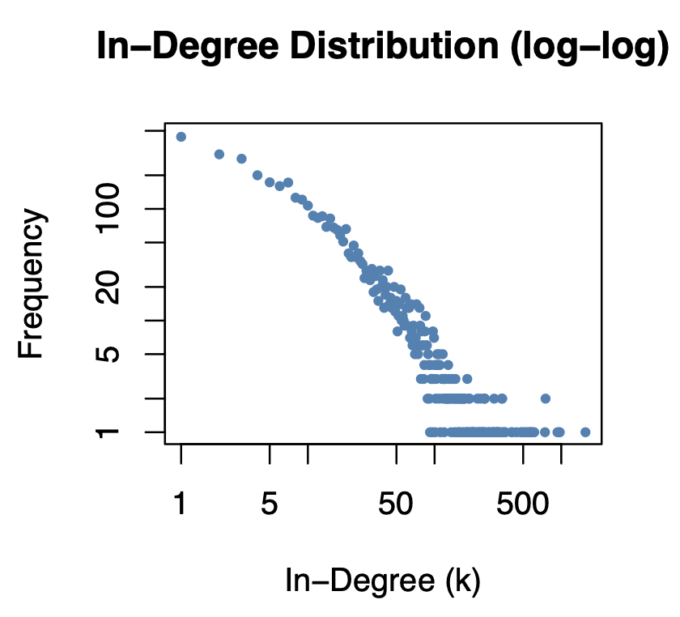
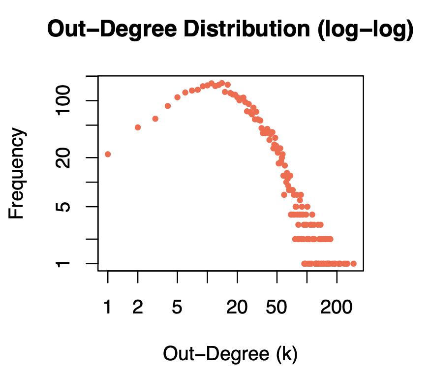
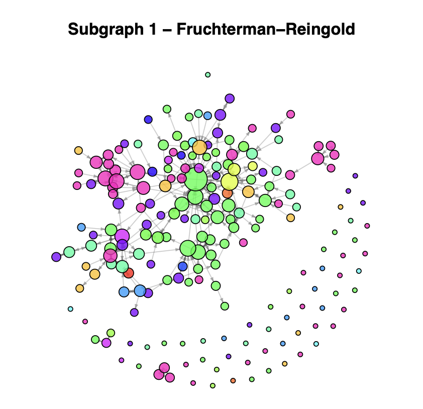
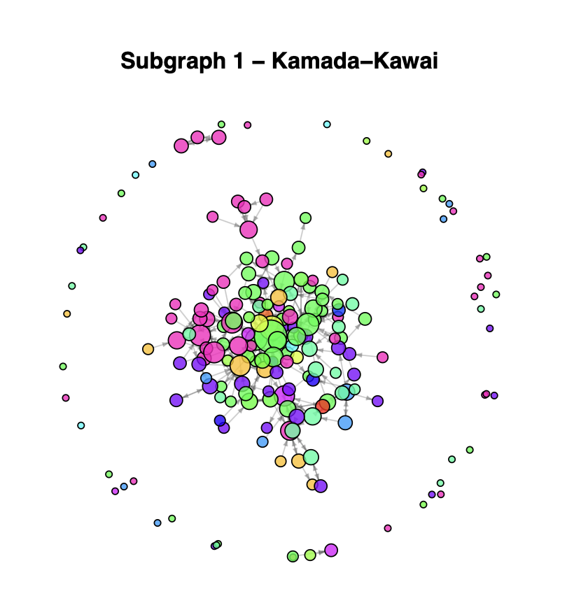
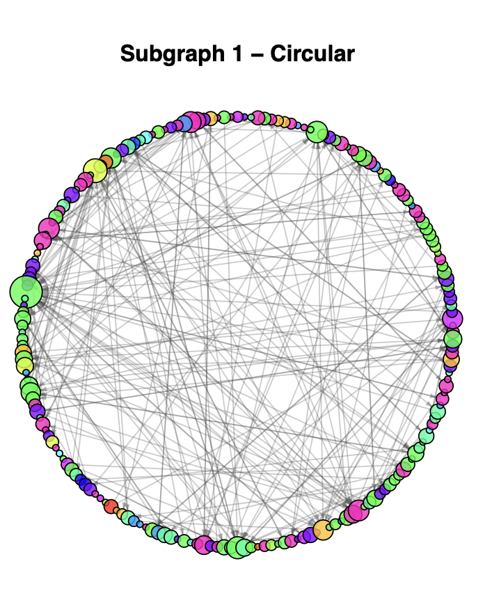
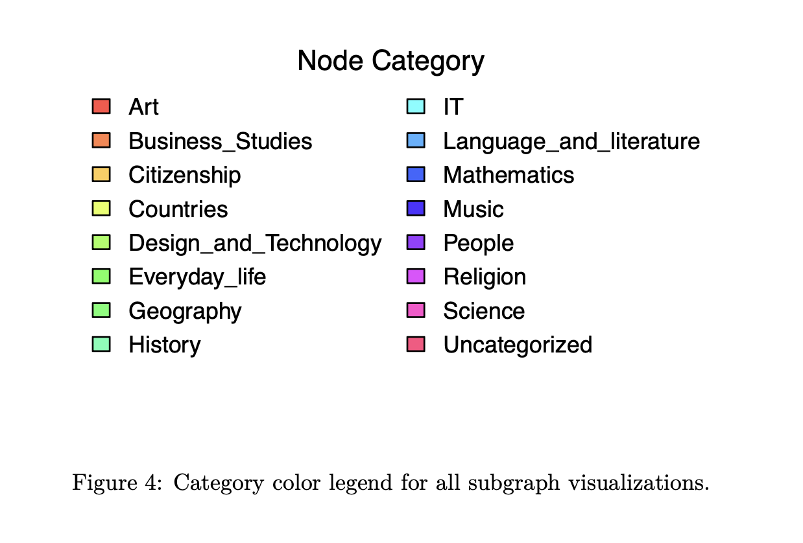
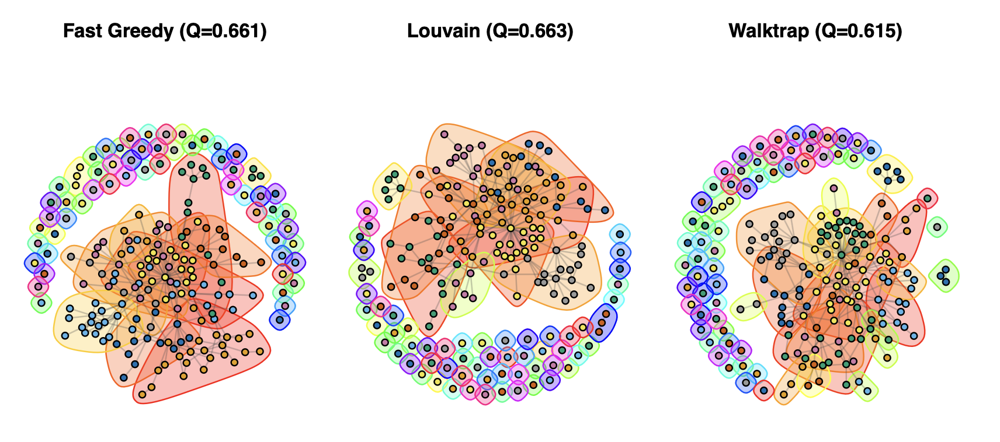
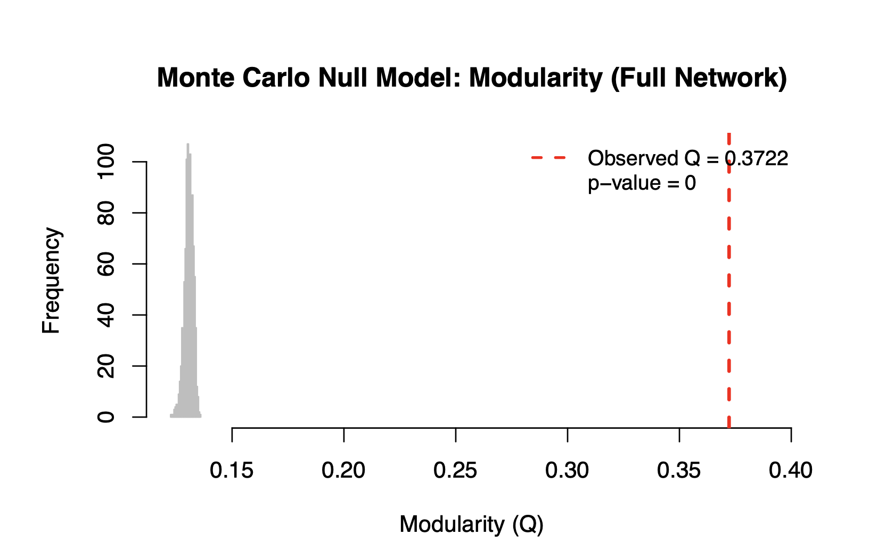

A Network Analysis of Wikispeedia
Treating the Wikipedia hyperlink graph behind Wikispeedia as a directed network of 4,592 nodes and 119,882 edges. We mapped its communities, hubs, and small-world structure using igraph in R.
Overview
Wikispeedia is an online game created by Robert West and Jure Leskovec at Stanford where players navigate from one Wikipedia article to another using only embedded hyperlinks. The game runs on a condensed snapshot of Wikipedia: 4,604 articles with over 119,000 hyperlinks. We treated this hyperlink structure as a directed network to study how information is organized and connected at scale.
Our analysis targeted four questions: how dense and connected is the network, which articles act as the most important structural hubs, do topically related articles cluster into communities, and is that community structure statistically meaningful rather than a product of random chance?
Global Network Metrics
Before diving into community structure, we computed standard whole-network metrics to characterize the graph's shape and connectivity.
Maximum shortest path in the largest strongly connected component
Mean clicks needed to traverse the largest SCC
Sparse, typical for information networks of this scale
~22% of directed links are mutually cross-referenced
The average path length of 3.18 hops within the largest strongly connected component explains why Wikispeedia works as a game. From nearly any article, players can reach nearly any other in just 3 to 4 clicks, the same "six degrees of separation" phenomenon found in social networks, compressed into a domain-specific information graph.
Network Hubs & Centrality
We computed three centrality measures: in-degree, betweenness, and eigenvector centrality, each capturing a different notion of importance. The same handful of broad articles dominate all three rankings.
| # | Article | In-Degree | Relative |
|---|---|---|---|
| 01 | United_States | 1,551 | |
| 02 | United_Kingdom | 972 | |
| 03 | France | 959 | |
| 04 | Europe | 933 | |
| 05 | England | 751 | |
| 06 | World_War_II | 751 | |
| 07 | Germany | 743 | |
| 08 | India | 611 | |
| 09 | English_language | 598 | |
| 10 | London | 587 |
The in-degree distribution is heavy-tailed on a log-log plot: a small number of broad articles absorb almost all incoming links while most receive very few. This scale-free signature is the same found in the World Wide Web and social networks. The out-degree distribution is bell-shaped on a log-log plot, peaking around 10 to 20 outgoing links per article.


Top Edges by Betweenness
Edge betweenness counts how many shortest paths pass through each edge. High-betweenness edges act as bridges between subject domains; removing them would substantially lengthen cross-domain navigation.
Community Detection
We ran three community detection algorithms on an undirected version of a 200-node induced subgraph (sub1). All three produced high modularity scores well above zero, indicating genuine community structure rather than random organization.
sub1 Network Layouts
To understand the structure of the network visually, we applied three different layout algorithms to sub1, a 200-node random sample. Nodes are colored by their top-level Wikipedia category and sized proportionally to their total degree. Each layout reveals different structural properties of the same underlying graph.
Fruchterman-Reingold spreads nodes evenly using a force-directed approach, naturally pulling well-connected nodes toward the center and pushing more isolated nodes to the outside. Hub articles with many edges sit at the center of their clusters. Kamada-Kawai places nodes so that graph-theoretic distances match geometric distances, meaning articles that are close in the network appear close on the plot. This tends to separate peripheral nodes more clearly than FR. The Circular layout places all nodes on a circle, which strips away cluster positioning but makes the internal edge structure easy to see. Certain arc regions have noticeably more crossing edges, corresponding to densely interconnected groups of articles.




Community Detection Visualizations
The three plots below show the same sub1 network with nodes colored by detected community membership. Each color represents a distinct community found by that algorithm, and the shaded hulls enclose nodes belonging to the same community, making the partition structure easy to see at a glance. All three algorithms find meaningful community structure, with modularity scores well above zero.
Fast Greedy optimizes modularity directly by greedily merging communities, producing 68 communities at Q = 0.661. Louvain also optimizes modularity but uses an iterative local-move strategy that tends to find slightly better partitions, yielding 68 communities at Q = 0.663. The close agreement between these two, with the same number of communities and nearly identical Q values, suggests the partition is a robust feature of the network rather than an artifact of the algorithm. Walktrap takes a different approach based on random walks: nodes that are often visited together in short random walks are grouped into the same community. It produces more communities (77) at a lower Q (0.615), splitting some groups that Louvain and Fast Greedy keep unified. Louvain was selected as the primary algorithm based on its highest modularity score.

Louvain achieved the highest modularity (Q = 0.663) and was selected as the primary algorithm. Its agreement with Fast Greedy on both the number of communities and partition structure suggests these communities are robust features of the network topology. We verified stability by running Louvain on all four randomly sampled subgraphs.
| Subgraph | Nodes | Communities | Modularity | Density |
|---|---|---|---|---|
| sub1 | 200 | 68 | 0.6620 | 0.0060 |
| sub2 | 200 | 79 | 0.6122 | 0.0058 |
| sub3 | 200 | 72 | 0.6520 | 0.0061 |
| sub4 | 200 | 84 | 0.6103 | 0.0061 |
Five Largest Louvain Communities (sub1)
The detected communities cluster tightly along topical lines: science articles group with science, geography with geography. This is exactly what we would expect if Wikipedia's hyperlink structure encodes semantic similarity.
Monte Carlo Null Model Test
High modularity alone does not confirm significance; sparse random graphs can produce inflated Q values. To verify, we ran Louvain on the full undirected network, recorded its modularity, then generated 1,000 Erdos-Renyi random graphs with identical node and edge counts and applied Louvain to each.

None of the 1,000 random graphs came close to Q = 0.37. The observed value sits far beyond the right tail of the null distribution, yielding a Monte Carlo p-value of effectively zero. The community structure we detected is far stronger than chance alone can produce.
Results & Conclusions
The Wikispeedia hyperlink graph exhibits the hallmarks of a real-world information network: sparse with density 0.00569, a heavy-tailed degree distribution where a few broad articles dominate, small-world properties with an average path length of just 3.18 hops, and well-defined topical communities that withstand statistical scrutiny.
Three centrality measures (degree, betweenness, and eigenvector) consistently elevate the same core articles (United States, Europe, World War II) as the structural backbone. These are the nodes Wikispeedia players inevitably pass through regardless of their chosen route.
Community detection with Louvain (Q = 0.3722 on the full network, p = 0 against 1,000 null graphs) confirmed that Wikipedia's hyperlink structure encodes genuine semantic organization. Reordering the adjacency matrix by community membership revealed clear block-diagonal structure, visually confirming the finding.
Future Directions: Incorporating the player navigation path data that ships with the Wikispeedia dataset would allow building a weighted network where edge weights reflect how frequently each link is actually clicked. This would reveal the gap between structurally available paths and the paths humans prefer. A configuration model null (preserving the degree sequence) would also provide a stricter significance test.